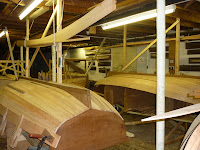
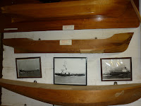
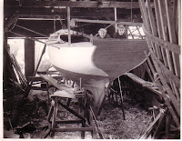
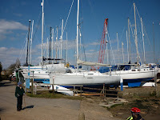
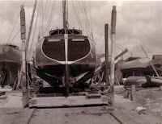
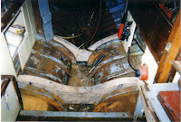

 |
| Boat-building at the Nottage Institute |
{kind=link}
The Nottage Maritime Institute, beside
the River Colne in Essex, is an unexpected and delightful place. It
was founded in 1896 from a legacy left by a keen amateur yachtsman,
Captain Charles Nottage, who wanted to offer “Colnesiders [..] the opportunity to
improve themselves in navigation primarily or make up their skills
generally.”
The Nottage is
housed in a former sail loft on the quay at Wivenhoe and
runs a range of RYA and other courses. It's also a museum, a
library and a boat-building
centre. What I loved about the Nottage as soon as I met it last
month, was the sense in which it's an embodiment of enthusiasm.
Enthusiasm and skill and pride in craftsmanship.
First there's the
overwhelming atmosphere of the volunteer ethos. When I was doing an internet
search before my visit I happened upon some oral history accounts by
former users and committee members. Rank off the page came the time
and effort they'd expended: the squabblings, the triumphs, diappointments and
personal feuds. Volunteers who run an instution, if they run it well, are
privately passionate about what they do. It doesn't necessarily mean
that they're also relaxed and charming about it. My heroine Margery
Allingham lived not far from Tollesbury on the River Blackwater, the next river along from Wivenhoe, and there's a
passage in her authobiographical The Oaken Heart where she is
talking about local societies and small freedoms. “A people who
really will die for freedom […] must reasonably be supposed to
squabble, quarrel, sulk and otherwise live for it also.” Sulking for Freedom – what a
great concept!
Nevertheless there was
nothing in the least quarrelsome or sulky during the evening I spent at the Nottage. An elderly curator
welcomed us and pointed to exhibits with as much delight as if they'd
been his own. He was equally enthusiatic about the new set of chairs
that had recently been donated and the throughly efficient modern projection system
which I'd be using for my talk. The night outside was dark and cold,
my audience sparse but commiitted. They were from the Eastern region of
the Arthur Ransome Society and had trustingly invited me to talk
about my Strong Winds trilogy.
“Whatever you like really –
and your boat of course.”
“Aha,” I
thought, rubbing my chilly hands with glee “Encouraged to talk about my
books AND my boat … we could be here some time!”
 |
| Exhibits at the Nottage Institute |
{kind=link}
The true heart
of the Nottage, as far as I was concerned, wasn't the former sail
loft in which we were sitting -- every inch of wall-space crammed with
ship-portraits, photographs and models -- it was the working space below us, dedicated to the building of wooden dinghies. It made me
think of the opening to Racundra's
First Cruise (1923) Arthur Ransome's first book about boats. Racundra was built for Ransome in Riga -- possibly with dirty money
from his complex undercover activities in the aftermath of the
Russian Revolution, or so the author Roland Chambers suggests.
This was 1921, Ransome was in his mid-30s, finally living in relative safety with the
woman he loved. The creation of Racundra was cathartic and transformative. It was also expensive, irritating and profoundly emotional. The book begins with disparaging remarks about houses
“Houses are but badly built boats so firmly aground that you cannot
think of moving them.”
Gathered in a former sail-loft beside a muddy river,
how could we not agree?
“The desire to build a house is
the tired wish of a man content thenceforward with the single anchorage. The desire to build a boat is the desire of youth unwilling to
accept the idea of a final resting place.”
Ransome couldn't have known
then that he'd continue buying and building boats for most of the
rest of his life but if he'd read his own words carefully he might have guessed it would be so.
“It is for that
reason perhaps that when it comes, the desire to build a boat is one
of those that cannot be resisted. It begins as a little cloud on a
serene horizon. It ends by covering the whole sky so that you can
think of nothing else. You must build to regain your freedom. And
always you comfort yourself that yours will be the perfect boat, the
boat that you may search the harbours of the world for and not find.”
Now let's just
re-write that passage …
“It is for that
reason perhaps that when it comes, the desire to write a book is
one of those that cannot be resisted. It begins as a little cloud on
a serene horizon. It ends by covering the whole sky so that you can
think of nothing else. You must write to regain your freedom.
And always you comfort yourself that yours will be the perfect book,
the book that you may search the libraries of the world
for and not find.”
I think we all
know what he's talking about here.
And, as long as you accept that this
elusive quality of perfection is perfection in the eyes of the
individual, then instead of Ransome's "build a boat" you could equally well substitute paint a picture,
plant a flowerbed, bake a cake, establish a maritime institute –
any personal creative activity, that is dependent on craftsmenship and
comittment (okay, obesssion, if you prefer).
When I was a
child, more than fifty years ago, my father was a yacht broker. I had
difficulty explaining to my schoolfriends what this meant, exactly. Dad would have
said it was finding the right boat for the right owner – though
when I look at the slim racing yacht with towering cloud of canvas
that he sold to my mother as a suitable boat for a beginner, I do
wonder whether the need to earn his agent's commission didn't
sometimes conflict with this search for the perfect owner / vessel fit …
 |
| With my brother in a yacht designed by my uncle |
{kind=link}
Anyway as
far as I was concerned as a child Dad's job meant lots of hanging
around in boatyards. His brother was a naval architect and if Dad
could find a customer who wanted a boat BUILT – well that was a
proper project for all the family.
My talk at the
Nottage, in that shrine to old-fashioned craftsmanship, then launched
merrily into an exposition of the structure of book-writing using the
technical language of boat-building: the laying down of the keel as
the writer's lived experience (conscious or subconscious) as well as
the work of previous writers: the steaming of the ribs as the essential
elements that give unique shape to the book. You can muck about with
all sort of other things when you're building a boat / writing a book
but not with your keel and your ribs. That's who you are – for the
purpose of this book or boat. You can of course try to build things
differently next time.
People asked
questions about the physical process of turning a story into a book
and I answered by burbling on about the skills of the book-designer, the printer, illustrator
etc etc and it was all utterly congenial. In the sawdust-filled air of the
Nottage no-one was discourteous enough to say – “But Julia,
that's not how they do it anymore. Yachts are mainly plastic. You get
a mould and pour it in. Books are all going to be electronic. You press a button and it up-loads ...”
My father used to say that he gave up enjoying his work as a yacht broker with the advent of fibre-glass as
the primary material for yacht construction. He resented the increase of standardisation and mass-production – no longer was he selling boats of character to
people of character, he claimed. He was wrong, of course. Wooden boats
could also be built to standardised designs and even plastic boats vary one
from another according to the way that they are finished and used. He
just wanted more time to paint water-colours or restore Thames
sailing barges. Talk about Sulking for Freedom – Dad was a master!
He had a point, however – and I suspect that Ransome might have agreeed with him. The
twentieth century saw huge change in all aspects of the yachting
industry, as the twenty-first is seeing renewed change in publishing and the media.
Yesterday my mother and I attended Claudia Myatt's gallery opening
in Waldringfield Boatyard, Suffolk. This was an uber-location of my childhood -- except that, as my mother reminded me, the grunpy old shipwrights who were in
charge when I was a tot loathed the cluttering up of their premises by women and
children and didn't mid saying so. Yesterday we were warmly welcomed to the yard by new owners Emma and Mark and their family and soon they'll will be
selling me and my grand-children ice-creams and fizzy drinks as well as Claudia's
pictures and books.
 |
| Boatyard 2013 |
{kind=link}
 |
| Boatyard 1959 |
{kind=link}
I took a photo of the modern yard and compared it with one of my black and white museum snaps.Every boat in the
modern shot seems to be white with a metal mast and blue keel, just as (currently) one
ebook read on your Kindle or your Kobo looks superficially very like
another.
But they ain't – we all know that. And what my photo
doesn't show was all the individual owners who were working underneath or inside their yachts preparing for the
sailing season ahead. Spring is “fitting-out” time and we all have our agendas. I personally
am obsessed with my current project to freshen-up Peter Duck's
bilges so that our summer sailing, particularly after any shake-ups
in rough seas, is less malodourous. It's a grubby job but I dream, as I
do it, of the adventures and the sunny days that lie ahead. All those yacht-owners at Waldringfield
will have been doing the same, hoping and planning as they crawl around the cramped and awkward spaces, feeling every aching muscle and cursing stiff backs or arthritic knees.
 | |
| Inside Peter Duck |
{kind=link}
The
main oneupmanship of the non-wooden boat owner is that they get out
there and get sailing while people like me are still callousing our
fingers with the sandpaper. That's true of
course and it may also be true of the most obvious difference between the
stroppy, obsessive, hopelessly optimistic self-publishers and the
contented souls with a large advance and an umpteen-book publishing contract with a
multinational company. Commercially published writers have more time in which to write.
I'm
still enjoying a book-reviewer's judgement that my self-published novel, The Salt-Stained Book, has “the endearing wonkiness of a wooden toy”.
I contend however that the differences between traditional and independently-published writers are more apparent than real. As
with boat-building or yacht-maintenance or gardening or cake-baking,
we are individuals in the grip of our obsession. Exactly as the Great Man said, “It begins as
a little cloud on a serene horizon. It ends by covering the whole sky ...”